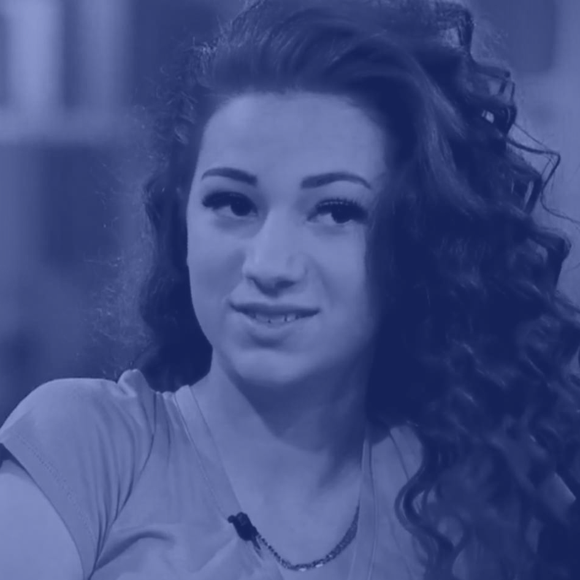
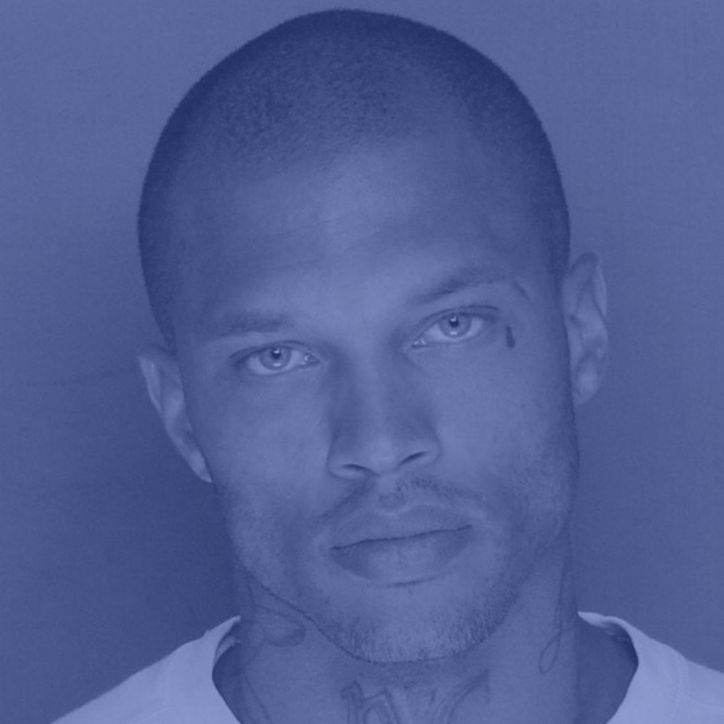
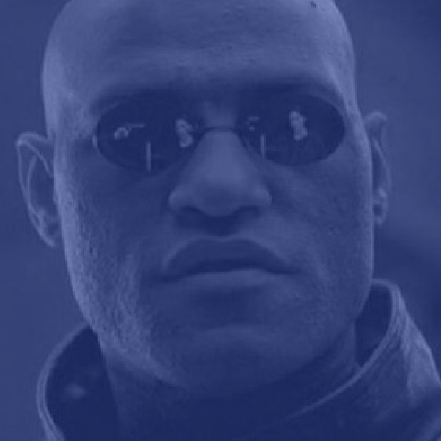

Why do some memes last longer than others? Are they just funnier? Better?
Memes aren’t built to last. This is an accepted fact of online life. Some of our most beloved cultural objects are not only ephemeral but transmitted around the world at high speed before the close of business. Memes sprout from the ether (or so it seems). They charm and amuse us. They sicken and annoy us. They bore us. They linger for a while on Facebook and then they die—or rather retreat back into the cybernetic ooze unless called upon again.
The constancy of this narrative may be observed in any number of internet memes in recent memory, from the incredibly short-lived (Damn Daniel, Dat Boi, Salt Bae, Queer Babadook) to the ones seemingly too perfect to ever perish like Harambe the Gorilla and Crying Jordan. The recent “Disloyal Man Walking With His Girlfriend and Looking Amazed at Another Seductive Girl,” the title of the stock image shot by photographer Antonio Guillem, just made the rounds a few months ago.
At a glance—even from a digital native—meme death seems like a much less mysterious phenomenon than meme birth. While tracing the origin of any individual meme requires a separate trip down the rabbit hole, it makes sense to assume that memes die because people get tired of them. Even as a concept such as “average attention span” is not incredibly useful to psychologists who study attention (different tasks require different attention strategies), there’s a general assumption that this number is shrinking. “Everybody knows” a generation raised on feeds and apps must have focus issues, and that assessment isn’t totally false. Our devices are “engineered to chip away at [our] concentration” in what’s called the “attention economy,” writes Bianca Bosker in The Atlantic, and apps such as Twitter keep us anxious for the next big thing in news, pop culture, or memes. Our overextended attention leads to an obvious explanation for meme death: We are so overstimulated that what brings us joy cannot even hold our focus for long. But is that really why memes die?
In 2012, the third and final meeting of ROFLCon, a biennial convention on internet memes hosted by the Massachusetts Institute of Technology, anticipated a shift in the formal qualities of meme culture, ushered in by social-media sites like Facebook and Twitter. Indeed, this was the tail end of an era, one defined by the once-ubiquitous image-macro template as applied to subgenres like Advice Animals, LOLcats, and Doge. At the conference, 4chan founder Christopher “moot” Poole was “wistfully nostalgic for the slower-speed good ol’ days,” Wired’s Brian Barrett reported, fearful that memes gone “mainstream” would betray the niche communities that considered memes a kind of intellectual property all their own.
“These days, memes spread faster and wider than ever, with social networks acting as the fuel for mass distribution,” Wired’s Andy Baio wrote that same year. “As internet usage shifts from desktops and laptops to mobile devices and tablets, the ability to mutate memes in a meaningful way becomes harder.” Both Poole and Baio suggest that memes lose something essential—whether a close-knit humor or the opportunity to add a unique, creative contribution—when they are enjoyed by a larger community. Social networks, some feared, would drive memes to extinction. But Chris Torres, the creator of Nyan Cat, anticipated that the break from the old-school would be a good thing. “The internet doesn’t really need to have its hand held anymore with websites that choose memes for them,” he told The Daily Dot’s Fernando Alfonso III in 2014. “As long as there is creativity in this world then they are never going away. This may just be the calm before the storm of amazing new material.”
And in 2017, it’s clear that the doomsday crew vastly underestimated internet users’ creativity. Increased mobility and access across platforms and communities has brought to the surface some of the funniest and weirdest content the web has ever known. Contrary to what Poole and Baio implied, weird humor and memes are hardly the exclusive domain of Redditors or the mostly white tech bros who populated ROFLCon. Today, many of the internet’s favorite memes come from fringe or ostracized communities—often from black communities, for whom oddball humor has long been an art form.
While internet memes categorically remain alive and well, individual memes do seem to die off faster than in Poole’s “good ol’ days.” They just don’t last like they used to: Compare the lifespans of say, Bad Luck Brian to Arthur's clenched fist or confused Mr. Krabs. But if overexposure is partially to blame for their demise, it certainly doesn’t tell the whole story. Nor can it alone account for the varied lifespans amongst concurrent memes. Crying Jordan lasted years; did Damn Daniel even last two weeks? Salt Bae took over social media in January 2017, but was quickly overshadowed by gifs of Drew Scanlon (“white guy blinking”) and rapper Conceited (“black guy duck face”), which lasted throughout the spring.
Why do some memes last longer than others? Are they just funnier? Better? And if so, what makes a meme better? The answer lies not in traditional memetics, but in the study of jokes.
Though he has yet to return to the subject in earnest since 1976’s The Selfish Gene, Richard Dawkins remains a specter over discussions of internet memes. The study, in which Dawkins extends evolutionary theory to cultural development, has been elaborated upon as well as critiqued in the three decades since its publication, spawning the field of memetics and drawing ire from neurologists and anthropologists alike. In The Selfish Gene and in memetics at large, “memes” are components of culture that survive, propagate, and/or die off just like genes do. Memetics in general is uninterested in why these components survive, or the contexts that allow them to do so—and much as individual persons are considered unwitting actors within the gene pool at large, so too are our intentions deemed irrelevant when it comes to the transmission of culture.
On the scientific side, researchers such as the behavioral scientists Carsta Simon and William M. Baum worry that the scientific rigor implied by “memes as genes” has yet to be met by actual memetics research. Anthropologists and sociologists “charge that memetics sees ‘culture’ as a series of discrete individual units, and that it blurs the lines between metaphor and biology,” wrote the Fordham University researcher Alice Marwick in 2013. And, as I’ve written, thinking of memes solely in this way tends to “relegate agency to the memes themselves” as if they are not subject to human innovation, creation, and responses. Memetics, more interested in the movement of memes than their content, may be helpful in tracking or predicting meme lifespans, but cannot fully account for how human participation factors in.
The weakness of the memes-as-genes theory becomes more apparent in an online context. By Dawkins’s deliberately capacious definition, the word “meme” may apply to sayings, bass lines, accents, clothing, myths, and body modification. In this vein, a meme in terms of digital culture could mean a viral hashtag like #tbt, tweet threading as a form of storytelling, or netspeak. However, memes as they’re popularly discussed nowadays often index something much more specific—a phrase or set of text, often coupled with an image, that follows a certain format within which user adjustments can be made before being redistributed to amuse others. Also known as: a joke.
Jokes are more than funny business and, in fact, laughter (even in acronym form) is not the standard for defining what is or is not a joke. We often laugh at things that are not jokes (like wipeouts); and jokes do not always elicit laughter (like a bad wedding toast). That memes employ humorous devices does not de facto render them jokes. But as it so happens, memes and jokes do share several formal qualities. And looking at memes as jokes may also help answer why some memes dry up, and why and when others return.
“Only when it comes to jokes is the idea of ‘meaning’ so often vehemently denied,” Elise Kramer, an anthropologist currently at the University of Illinois, wrote in a 2011 study of online rape jokes. “Poems, paintings, photographs, songs, and so on are all seen as having meaning ‘beneath’ the aesthetic surface, and the relationship between the message and the medium is often the focus of appreciation.” Kramer’s point is not that jokes cannot be explicated or unpacked, but rather that jokes—and memes, I’ll add—uniquely and deliberately make depth inconsequential to their appreciation. As displayed by recent gaffes like Bill Maher’s “house nigger” joke and Tina Fey’s “let them eat cake” sketch, comedy remains the most resilient place for ethically dodgy art. Reading “too much” into jokes is frowned upon and offended audiences are often told “it’s not that deep.”
Memes are viewed the same way, even by those who write about them. There’s an obligatory defense embedded in most meme coverage, as if writers sense they must keep the analysis at a minimum lest they spoil the fun. In a love letter to Doge, Adrian Chen wondered if “by writing it I played a crucial role” in guiding the meme toward obsolescence, “proving once again that writing about internet culture is basically inseparable from ruining internet culture.” Last summer, while declaring Harambe too dark to be corporatized and therefore too weird to die, New York magazine’s Brian Feldman admitted “there are other ways to end the Harambe meme. Like writing a think piece about it.” A month later The Guardian’s Elena Cresci repeated the line like gospel: “When it comes to memes, there’s a rule: It is dead as soon as the think pieces come out.” She even likens memes to jokes directly, asserting that “when memes go mainstream it means they’re not funny anymore. Memes are just in-jokes between people on the internet, and everyone knows jokes are much less funny one you’ve explained them.”
This evaluation shows another way memes and jokes are similar: Both are, returning to Kramer, “aesthetic forms where felicity (i.e., ‘getting’ it) is seen as an instantaneous process.” Unlike a painting, novel, or even a rousing Twitter thread which one is expected to “savor” like “a good meal,” the person who does not get the joke or meme immediately is considered a lost cause. “The person who spends too much time mulling over a joke is accused of ruining it,” Kramer writes. Tech reporters included, apparently.
But a commonly held accusation doesn’t equal truth. We might observe a correlation between a summer of Harambe think pieces and its decline not long after, or blame The New Yorker for making Crying Jordan uncool, but it’s worth noting that such pieces exist because their subject matter has reached a certain critical mass that makes them worth writing about. (With all due respect, I don’t believe New York Magazine, The New Yorker, or even The Atlantic is propelling memes into zeitgeist.) “Mainstream” doesn’t exactly signal the death knell, either. The “white guy blinking” gif continues to make the rounds when called upon—following the season finale of Game of Thrones, for example—and the line "ain't nobody got time for that" from a popular 2012 meme, met hearty laughter and applause when I attended Disney’s Aladdin, the musical, this fall. Some memes “die” and come back again, some surge and then are all but obsolete. Applying theories on the joke might help explain why.
Because of the shared attributes between jokes and memes, research on jokes can provide a template for how to study memes as both creative and formulaic. That includes finally finding a satisfactory answer to how and why memes “die.” In a 2015 thesis, Ashley Dainas argues that what folklorists call the “joke cycle” is “the best analogue to internet memes.” The joke cycle describes the kinds of commonplace, well-circulated jokes that become known to mass culture at large, such as lightbulb jokes or dead-baby jokes. Unlike other jokes that are highly specific—an inside joke between two friends, for example—these jokes have a mass appeal that compels them to be shared and adjusted enough to stay fresh without losing the source frame. These jokes evolve in stages, from joke to anti-joke, and will retreat over time only to resurge again later, even a whole generation later.
Viewing jokes as cultural artifacts, researchers aren’t just concerned with plotting a joke’s life cycle but also the social contexts that make the public latch onto a specific joke during a certain time. Lightbulb jokes, for example, arose as a type of ethnic joke in the ’60s and “had swept the country” by the late ’70s, wrote the late folklorist Alan Dundes. The joke, with its theme of sexual impotence (something/one is inevitably getting screwed), was “a metaphor which lends itself easily to minority groups seeking power.” It was one means to thinly veil prejudices, using the joke as an outlet for anxieties about the civil-rights legislation achieved in the ’60s, and carried out in the ’70s and beyond. Hence most lightbulb jokes, even when they don’t cross ethnic or racial lines, tend to be a comment on some social, cultural, or economic position—“How many sorority girls does it take to change a lightbulb?” et al.
Dead-baby jokes became popular in around the same period, a time marked not only by racial upheaval but gendered, domestic changes alongside second-wave feminism: increased access to contraception, sex education in school, women forestalling or even forfeiting motherhood in favor of financial independence. While determining exact causal relationships is a sticky matter, Dundes advised, “folklore is always a reflection of the age in which it flourishes ... whether we like it or not.”
And so too memes. Like jokes, memes are often asserted to be hollow, devoid of depth, but it would be foolish to believe that. Memes capture and maintain people’s attention in a given moment because something about that moment provides a context that makes that meme attractive. This might provide a more satisfying, but also more expansive, answer than simple boredom for why memes fall out of immediate favor. The context that makes a meme, once gone, breaks it. New contexts warrant new memes.
The 2016 U.S. election season and aftermath brought into focus how memes become political symbols, from Pepe the Frog to protest signs. In Pepe’s case, the otherwise chill and harmless character created by artist Matt Furie in the early 2000s was on the decline until he got a new context when the alt-right reappropriated him leading into the election. Pepe was resurrected from obscurity when internet culture found a new need for the cartoon’s special brand of male millennial grotesquerie.
Memes don’t just arise out of atmospheric necessity but disappear as well. The same election season effectively killed off Crying Jordan, when perhaps the idea of loss suddenly became too poignant, too meaningful for the disembodied head of a crying black figure to read as playful. Memes catch on when we need them most and retreat when they are no longer attuned to public sentiment.
Ultimately, fans and founders of the old-school meme-distribution methods aren’t entirely wrong. Flash-in-the-pan memes like Dat Boi are limited by a format that restricts the meme’s ability to evolve to the next creative iteration of itself. Dat Boi—which didn’t have much going on beneath the surface weirdness of a unicycling frog—could mutate no further, got stale, and trailed off without the chance to become cyclical (the irony) in a way that would allow it to last beyond its moment. Harambe, for all its weirdness, could not survive much beyond the life of the news story that spawned it. (In the meantime, as a friend points out, the Cincinnati Zoo has been working overtime with PR for nine-month-old hippo Fiona, who’s since become something of an internet sensation herself.)
The "expanding brain" meme, however, continues to chug along for the greater portion of 2017. The meme, which mocks the infinite levels of intellectual one-upmanship common to any and all online discussions, is exactly what’s called for in this post-truth moment where everyone is a pundit. I foresee this one sticking around for a long while yet. Meanwhile, it’s easy to see why a festive meme like “couples costume idea,” would come and go in accordance with the month of October.
As Dundes cautioned with jokes, we should not be too confident in claiming cause and effect between memes and their present contexts. Time and distance can assist us in evaluating why some memes ignited our feed, why some burned out quickly, and why others stuck around. The answers to these questions are not so random, but suggestive of the cultural, political, and economic times we live in. Provided we actually remember the memes.
“The World Wide Web has become the international barometer of current events,” the music librarian Carl Rahkonen wrote back in 2000. “The life of a joke cycle will never be the same as it was before the internet.” No kidding. The pace of life online tests the durability of culture like nothing else before, but it is still ultimately culture. The memes we forget say as much about us as the memes that hold our attention—for however long that is. We create and pass on the things that call to our current experiences and situations. Memes are us.
Now this post is going to be a little difficult to pull off without coming across as a “kids these days…” type of rant so I should probably start off with this: I am just as guilty as anyone else in terms of what I am writing about here.
I want to talk about what I have not-so-creatively named the “meme-ification” of the world around me. What I mean by this is that there are millions of people that create, share, and like memes that are posted by Facebook and Instagram accounts like @fuckjerry, @beigecardigan, @betches, etc. and I know the vast majority of my friends follow many of the same accounts I do, and for the same reason. At their most basic, memes are just images with a little bit of text providing a little bit of entertainment.
For example:
This is from some viral video with a dude literally cutting a piece of meat into slices and throwing salt on it. No other context behind it, but for some reason it has blown up into some viral shitstorm beyond all reason and comprehension. We have officially entered the land of Idiocracy. And I am a member.
While stuff like this is seemingly innocent in terms of making a Turkish meat-monger famous for a day or two (yes, I researched it, and here he is The Famous Salter), I think the more concerning part of all this is the trend towards an attention span that a goldfish would look down on.
Whenever I am looking for a distraction or to procrastinate or to just generally shut my brain off I have unlimited options. Do I go for Instagram and mindlessly flick my thumb towards the top of the screen until I hit where I left off a few hours ago? Should I check into Facebook and see which of my friends I haven’t talked to in years are now getting married, having children, or getting into heated arguments in the comments section of some political article? Or maybe I should just jump to Snapchat and look at 10-second clips of video that will be gone in a day?
At first glance, all of these are relatively harmless to the world around me. However, I’ve noticed a somewhat disturbing trend in the content of these posts and it probably aggravates me more than it should. Not because it’s racist, sexist, offensive or anything else that social media has the potential to be, but because it seems to be promoting this deeply self-deprecating view of the world: posts like “When ur stressed about being out of shape for summer so u eat more to deal with the stress and make it worse” with a picture of an obese husky, looking sad.
That post got over 100k likes and the account has 4.9m followers. For comparison: Elon Musk has 780k followers, Paul Ryan has 53.6k followers, and the United Nations has 974k followers.
Let that sink in. More people care to look at moderately funny pictures of a fat dog than care to follow some of the most influential people and organizations shaping the world around us. Our actions are the best display of our priorities, and there are few places we are more active than on social media.
A lot of us would rather get a quick smile on the inside (while keeping a straight-faced, zombie-esque look on the outside) from posts that are equal parts pathetic and true than to spend our time looking into or doing something that has meaning. Personally, I get an odd sense of gratification when I see a post that perfectly describes a feeling that I’ve had at some point in the past. There is a level of identity that comes with these kinds of posts that essentially says “hey, it’s alright to do or feel that thing that doesn’t align with your true values because 76,923 other people liked that same picture so you aren’t alone.”
These modern-day hieroglyphs are tricky, and I think they are representative of a larger problem. When life gets uncomfortable, or we get bored, or we need to zone out for a bit, we have the security of knowing that we can use social media of all types to escape.
These apps and sites are our human-sized, digital thunder-shirts. If we did not have these distractions, we would have to find more productive ways to manage those emotions. We have created a veil of ignorance and a shield from our own emotions that permeates society deeper than we probably realize. If you are anything like me, I never feel good after I spend an hour on my phone or computer, mindlessly scrolling or swiping through page after page of pointless content.
This is a feeling that has been confirmed by the scientific community as well. One study found that there was a direct correlation between social media use and the occurrence of depression in adults ranged 19-32. So while we turn to our social media platform of choice for momentary relief from the world around us, we are actually making ourselves more depressed, and therefore more likely to need distractions. This positive feedback loop is terrifying. Extrapolate it over a long enough period and you get extremely depressed people completely dependent on useless entertainment that satirizes the state of the lives of the people that consume it.
There isn’t really anyone or anything to blame, per se. That group of people aged 19-32 who are getting depressed from social media consumption are the first generation of people that have grown up with constant access to these technologies. The accessibility of an alternate reality is not something that could have been planned for and the consequences of the proliferation of this meme-based existence can only be viewed in hindsight.
Try, for a second, to personify memes, social media, etc. as if it were an awkward and rebellious teenager: everyday it matures a little bit more in ability, but not in common sense; it rejects any criticism on the basis of a lack of understanding; it is filled with underutilized potential; it creates a separate value system where “success” and “happiness” are judged on different criteria than the world at large; and it forces every individual to decide what their relationship is going to be with the distractions that constantly bombard them.
We are not hapless idiots floating in a sea of memes, celebrity gossip, sports trivia, and the like. We have a choice to make every day. It is unscrupulous for older generations to hit the youth with “when I was your age” or “why don’t you go play outside” or any of those classic old-to-young phrases because this is an entirely new world of possibilities that the youth(ish) of today inhabits. There is no precedent for this.
We live in a world ripe with unspeakable atrocities, political warfare, humanitarian crises, and constant attacks on self; it desperately needs our attention and guidance. Yet, when faced with the overwhelming facts, we are instinctively and systematically driven towards seeking distractions. The state of the world is the malady, and social media is the prescribed cure.
We feel helpless in affecting real change, and every news outlet depends on a steady flow of more bad news. Ideals of perfection are portrayed as the norm. The ideological contradictions of a social media feed that contains photoshopped models from one account and memes telling you its okay to eat an entire extra large pizza on the next would confuse damn near anyone.
It takes nothing short of constant and aggressive vigilance to be okay with oneself. It is no wonder that self-deprecating memes have become so popular. From my personal observation, the demand for distraction is being met by an overwhelming supply that makes it very hard to resist.
To sum it all up here, if nothing else, we need to be more aware of how we consume social media of all types. If you feel like crap, pick up your phone, browse through your feeds, and still feel like crap, then what was the point? All you’ve really done at that point is waste precious time you could have been spending to work through the initial crappy feeling (or at least doing something even slightly more productive).
I know this has been a bit of a rant, and may have come off as pretentious, but a lot of what I have included here serves the purpose of helping me reinforce it in my own life. I don’t have an answer, and I struggle with this quite a bit myself. Over time, I’ve gotten better at catching myself when I reach for my phone out of instinct. However, I can still be a pretty awkward guy and trying to avoid the temptation of that social media crutch is something I’ll probably be working on for the foreseeable future. At this point, I think the best thing that myself, or any of us can do is to keep working on it, and always striving for that greater sense of the self-awareness.
TURN ON (your free will), TUNE IN (to yourself), and DROP OUT (of whatever doesn’t improve your life)
More and more of the things that set the internet on fire are of that species of charmingly moronic pairing of text and image that allows even the post-literate to feel like they have partaken of a shared cultural moment. And now, scientists are beginning to understand how the curiously addictive visual tropes known as “memes” are born, why they die, and whether or not it’s possible to predict which will “go viral” and be harvested by the night-soil merchants up at meme warehouses like Cheezburger.
Treating memes like genes tells us which are likely to spread
The internet, of course, was barely in its infancy when Richard Dawkins, a British evolutionary biologist, coined the term “meme” back in 1976. And he meant it as a much more nuanced concept, encompassing pretty much any idea that is good at propagating from one human brain to another—whether it is dialectical materialism or the tune to Happy Birthday.
But Dawkins was deliberate in his comparison of memes to genes. Like the molecular units of inheritance, memes “reproduce” by leaping from one mind to another, “mutate” as they are re-interpreted by new humans, and can spread through a population. The internet has radically accelerated the spread of memes of all kinds; but it has also led to the rise of a specific kind of meme, the kind encapsulated by a phrase or a picture. And importantly for scientists, the life of a such a meme is highly measurable.
New research from Michele Coscia of Harvard University goes so far as to suggest a decision tree—which is sort of like a flow chart—that can show at any given point in an internet meme’s life how likely it is to go viral. In order to generate this chart, Coscia tracked 178,801 variants of 499 memes, all gathered from what is arguably the internet’s biggest clearinghouse for memes, Quickmeme.
This is how you sort out how likely your meme is to go viral. (Michele Coscia)
This decision tree is a bit challenging to parse, but here goes. The number at the top, 35.47%, is the total proportion of all the memes Coscia analyzed that were “successful.” By his definition, success meant receiving a high enough score on Memebase, where users can vote a meme up or down. (His threshold for “success” was necessarily somewhat arbitrary.)
Among these successful memes, an interesting phenomenon emerges. Those that hit an above-average peak of popularity at some point in their life were less likely, overall, to ultimately break the “success” threshold. Memes that were shared more consistently over time, rather than a great deal all at once, were more likely to ultimately rack up enough points.
In the attention economy, memes do battle to the death
If you think Nature is red in tooth and claw, you have yet to stare longingly at a website’s analytics dashboard, quietly willing an article you wrote to go viral. (Not that anyone at Quartz has ever done this.) In the attention economy, memes compete for a finite pool of attention, representing all the time everyone spends on the internet. Which means that for one meme to become popular, some other meme must pass into obscurity.
Coscia’s data crunching revealed that memes that were “more competitive” than others—that is, whose rise in popularity tended to correlate with the fall in popularity of other memes—were more likely to succeed overall.
But memes that travel in packs do best of all
Coscia identified a number of “meme organisms”—clusters of memes that tend to do well together. He doesn’t speculate about why, exactly, these memes’ fates seem to be linked together, but a look at meme cluster #45, consisting of two memes (the average number in a cluster was 4.8) suggests a strange sort of logic to their linkage.
Only meme-meisters know why some memes tend to succeed at the same time as others.(Michele Coscia)
Perhaps (this is my speculation) one interpretation of meme organisms is that certain memes seem to capture the zeitgeist. Thus, memes could have seasonal patterns, or even follow the anxieties and fads of the day, as suggested by trends in the news. Or perhaps memes that remind you of one another do well because they feed off one another’s attention. Just as genres emerge in music, literature and art, so too in internet memes.
Memes have a life of their own, independent of who shares them
Coscia notes that most previous research on how things go viral has sought to map the social interconnections of those who are sharing content. Thus, studies of how news is shared on, say, Twitter seek to map who are the most influential sharers of information in any given news cycle.
Nodes at the center of these maps of how news spreads represent people with influence online.(Weng et al.)
But Coscia completely ignored who was sharing which memes—all of his data came entirely from the scores that memes receive on Quickmeme—and yet he was still able to discern patterns about which kind of memes would go viral. It’s not surprising that the underlying structure of the internet, a given website, and the human brain should all have an effect on making some things more likely to spread than others, but in his attempt to qualify the characteristics of this collective system, Coscia showed that memes can have intrinsic characteristics that make them more likely to succeed. Granted, these qualities aren’t apparent until a meme has already begun to spread, but once identified, they help predict how well it might do at some point in the future.
People get bored quickly, and are surprisingly predictable about what they’ll share
Past research about memes shows two things that should surprise no one, but are worth emphasizing: If you can figure out what someone is interested in, you can predict how likely she is to share a piece of content. And the more similar a piece of content is to what she has shared before, the more likely she is to share it. In other words, affinity groups rule the web.
“Relationship between the probability of retweeting a message and its similarity to the user’s interests, inferred from prior posting behavior.” (Weng et al.)
Also, memes have a half-life. They become popular, and then, taken as a whole, they are consumed and then tossed on the scrap-heap of history.
While their individual histories vary, on average the slow disappearance of interest in a meme is highly predictable. (Weng et al.)
No one has any idea what makes something go viral in the first place
Attempts to predict what will go viral on the internet are based on the past behavior of a meme. As Coscia emphasizes in his work, no one has yet to rigorously demonstrate, in advance, why any particular type of content goes viral. This sort of prognostication remains an art rather than a science.

Betty had one overarching daydream: to be famous. I asked if she had any particular area in which she wanted to stand out, and she said, "It just has to be something good. I don't want to be known for being shoved under a subway or having my apartment hit by lightning." She admitted there were other things she wanted - a boyfriend, eventually a husband and children, a more satisfying job - but she was pretty sure that being famous was the key to getting all of the above.
Two common daydreams today are of being rich and/or famous. (I talk about this in my book Daydreaming:Unlock the Creative Power of Your Mind(link is external) and in my article on money(link is external).) The British psychoanalyst Adam Phillips(link is external)once explained, "Because money is the solution to poverty, it becomes a kind of greedy symbol for anything and everything we might want."
Same thing for fame: it represents something that we want and think we could attain by becoming famous. But what exactly does fame represent? And how realistic is it to think that being famous actually meets that need?
We have lots of evidence that being in the public eye is a mixed blessing, at best. One of the best marketing tools for any publication, online or off, seems to be revelations about the misery of famous people. Why do we eat this stuff up? Because it confirms what we already know - that public recognition brings its own problems and that those who have it aren't any happier or better off than we are. (My colleague on the PT website, Susan L. Smalley, has a very smart post on this topic.)
But still we dream of the "15 minutes of fame" - or much more - that the artist Andy Warhol once predicted we would all have. So what's going on?
Neuroscience and attachment theory offer an explanation of what we are looking for: according to recent research, normal human development requires that we feel recognized and seen by others. In early infancy that feeling is relatively easy to attain, since adults are programmed to respond to the unblinking gaze of babies, and parents in general do attempt to meet their little one's needs for food and comfort. But as a child develops, and their needs become harder to meet, a parent's life also often becomes more complicated. Other children, other adults, the marital relationship, financial needs and household needs start to interfere with a parent's ability to empathically understand and respond to a child. Even in the best of homes, a child may sometimes feel unseen, at least some of the time.
Despite all the hoop-la of contemporary psychodynamic theory, this lack of recognition at home is not, all bad. It is part of what makes us start to look for recognition outside of the family - at school or in after school or weekend activities, for example. It is part of the push for siblings to connect to one another, and part of what makes us look for and develop friendships. As the psychoanalyst D.W. Winnicott once said, "good enough" parenting is much better than perfect, because if we got all of our needs met, we would never move out of the parent/child relationship.
So what does a daydream about becoming famous mean? Well, it can have lots of personal components. For example, I encouraged Betty to keep talking and thinking about her fantasies, and gradually she began to draw a more detailed picture of what she was looking for. Details, even insignificant ones, are far more important than we tend to think. (I've talked about this in some of my earlier posts, and I've also written about it. If you want to see more, check out my articles(link is external) "Using Daydreams in Psychodynamic Psychotherapy" in The Clinical Social Work Journal and "Speaking of Feelings: Affects, Language and Psychoanalysis" in Psychoanalytic Dialogues)
It turned out that Betty really wanted to be like Sandra Bullock. "She's beautiful, and talented, and everybody loves her," Betty said. Wanting to be loved is almost always linked to a desire to be seen or recognized. So is the wish to be popular. Betty's daydreams included moments of receiving a standing ovation from an audience that included her parents and her siblings. As we explored the fantasy in ever more detail, it became clear that she felt that she had not accomplished something that her family admired; but as we talked even more, two other important pieces of information began to emerge. First, Betty shared that her family had difficulty expressing strong emotion. Her parents were quiet, soft-spoken people who seldom spoke of either positive or negative feelings. "They grew up keeping their feelings to themselves. I know they love me, and even that they're proud of me, at least sometimes; but they're never going to shout it from a rooftop," she said. A minute later she added, "I guess it really doesn't make sense to try to get a standing ovation from them."
Close on the heels of that realization came another. Betty was not feeling proud of what she was doing with her life herself. "It's kind of silly to dream of getting a standing ovation for something when I'm not even trying to do anything that I would applaud," she said.
Betty's wish to feel that someone else recognized her abilities was not a sign of inadequacy on her part. The psychoanalyst Heinz Kohut said that we all need what he called "the gleam in the eye" of someone who admires us. Attachment theorists, combining their observations of child developmentwith findings from neuroscience, say that everyone needs what they call "reflection" from someone who knows and understands us. Some of that came for Betty in the course of therapy; but as we worked together, she also began to find it in the faces of friends and in her supervisor at work. And then she started to look for it - and to find it - in her parents.
"I don't need them to give me an ovation anymore," she said. "Their admiration is much more subtle than that. But it's there. I don't need to be Sandra Bullock. I'm okay being me."
*Names and identifying information have been changed to protect the privacy of individuals and families.

In 2012, a study found that a desire for fame solely for the sake of being famous was the most popular future goal among a group of 10-12 year olds, overshadowing hopes for financial success, achievement, and a sense of community. Which raises the question: Why do people want to be famous?
John Maltby found six major reasons why people seek fame:
Intensity (e.g., "Very little matters to me apart from being famous")
Vulnerability (e.g., "I want to be famous because it would help me overcome issues I have about myself")
Celebrity Life-Style (e.g., "I want to be rich")
Drive (e.g., "I work hard everyday to be famous")
Perceived Suitability (e.g., "I have got what it takes to be famous")
Altruistic (e.g., "I want to be famous so I can make a contribution to society")
The predominant motivations for fame involved a perceived suitability and intensity for a celebrity life-style. Unsurprisingly, those motivations were most strongly related to narcissism. In contrast, people who were more agreeable and securely attached tended to be more motivated by altruistic interests, and conscientious folks tended to be more motivated by drive.
A new study by Dara Greenwood and colleagues extended these findings by constructing a new measure of fame that involved fewer, more focused items. The researchers found three main reasons why people seek fame:
The desire to be seen/valued (e.g., "Being on the cover of a magazine", "Being recognized in public")
The desire for an elite, high status lifestyle (e.g., "Having the ability to travel in first class and stay at exclusive resorts", "Living in a mansion or penthouse apartment")
The desire to use fame to help others or make them proud (e.g., "Being able to financially support family and friends", "Being a role model to others")
The desire to be seen/valued was the biggest perceived appeal of fame, followed by the desire for status, followed by a prosocial motivation. Interestingly, the motivations were associated with different fundamental human needs. While narcissism and the need to belong were associated with multiple motivations, the need to relate to others was only associated with the prosocial motivation.
To look deeper into these motivations, the researchers also measured the frequency of fantasizing about fame, and the perceived realism of becoming famous. They found that narcissistic folks focused on the recognition and elite status that fame offers, and believed future fame to be more realistic. In contrast, those with a heightened need to belong were attracted to all aspects of fame, except for a perceived belief in the realism of fame. For these folks, the central aspect of fame was fantasizing about fame and the imagined social worth fame would provide, perhaps providing these folks with a soothing escape from personal anxieties about social exclusion. Nevertheless, it seems that both those scoring high in narcissism and a high need for belonging share a common need to be seen and valued on a large scale.
Those scoring high in relatedness tended to score lower in narcissism and only showed an interest in prosocial fame. Therefore, it seems it's important to distinguish between the need to belong-- to feel positively and consistently connected to others-- and the need to relate. Researchshows that people with a high need for relatedness are not anxious about social exclusion, have a greater sense of security with their immediate social network, and are more confident that they are valued by others. In turn, they tend to report a positive mood, vitality, and well-being.
Scientifically studying the appeal of fame, and the underlying motives, can be fruitful. For instance, consider the study I mentioned earlier that found that fame for the sake of fame was the greatest desire among a group of preadolescents. The researchers noted that preoccupations with peer acceptance, which is a natural preoccupation among that age group, might make the social recognition that comes with fame all the more appealing. Therefore, the intense desire for fame among preadolescents and teenagers can be put in a broader context, satisfying a fundamental human need.
There are also links to creativity. Marie Forgeard and Anne Mecklenburg conducted a large review of the role of motivation in creativity. While they found the importance of intrinsic (i.e., process-focused) and extrinsic(i.e., outcome-focused) motivation, they also argue for an overlooked motivator of creativity: prosocial motivation. Perhaps creativity researchers can join forces with researchers investigating the appeal of fame to see if there are common motivations that underlie both the desire to create and the desire for fame. For instance, perhaps famous people with a prosocial motivation produce creative work that has a distinct prosocial flavor to it.
Regardless, the current research certainly is fascinating, and suggests that the appeal of fame is rooted in basic human needs, and differences in the desire for fame are associated with the extent to which such needs are satisfied.

Social networks produce inside jokes at a relentless pace. The best, worst, stupidest and funniest of those jokes become memes, and either you get them or you don’t.
But if you don’t and, like me, you’re a sad nerd desperate to understand the gags you’re missing, there’s a site dedicated to helping.
Over the past several years, the website KnowYourMeme has become what Wikipedia is to information or UrbanDictionary is to esoteric sex acts. The site is a mostly reliable, crowdsourced translator of the internet’s inside jokes.
The site has a home page but, like Wikipedia, it is chiefly useful when looking up specific entries. It is amazingly comprehensive, given that it is run by a skeleton team of six writers and one developer out of a small office in Brooklyn, near the Williamsburg Bridge. But much of the work of the site is done by a group of 38 volunteer moderators.
They’re known as the meme council. These are some of their stories.
Jacob Johnson / Age: 25 / Expertise: Bionicle, Touhou
Based in: Oklahoma City
First internet communities: “Jurassic Park” toy and Lego fan websites
Hours spent moderating a week: Between 21 and 28
Mr. Johnson grew up on a farm in Oklahoma with a spotty internet connection. That meant that unlike many other council members, the first internet communities he was a part of were not on networks like 4chan, Reddit, Twitter or even Facebook, which could take longer to load.
Instead, he surfed JPToys.com, a website for fans of “Jurassic Park” toys, and BZpower.com, a fan site for the Lego toy line Bionicle (which has a hungry community of fans on social networks).
Much of what Mr. Johnson does for the site may seem like busy work: He makes sure images are properly tagged, and edited.
Mr. Johnson is an outdoorsman, and he has worked for the United States Forest Service, the National Park Service and the Bureau of Land Management. But online, he said, he has found people who share some of his more esoteric interests, such as Japanese video games like Touhou, which he knows a great deal about despite never having played it.
Those shared interests have made the meme council a comfortable place for Mr. Johnson, who feels close with several other moderators.
“Some mods I would be more open to telling certain things about my life than my family or real-life friends,” he said.
Steven Tieu / Age: 18 / Expertise: Miraculous Ladybug, Lolirock
Based in: Oshawa, Ontario
First internet communities: Facebook, YouTube, Twitter, Reddit
Hours spent moderating a week: “Pretty much all week for any time I can.”
A younger moderator, Mr. Tieu was introduced to KnowYourMeme in a little more standard way than Mr. Johnson was. He said that he was an outsider growing up and that social media platforms — first Facebook and YouTube and eventually Twitter and Reddit — allowed him to make connections more easily.
Mr. Tieu found himself gravitating to memes early, hoping to ensure that people understood their source material. He said he was drawn to KnowYourMeme for its value as a database.
“Yeah, I just kind of took stuff pretty seriously,” he said. “And then I just kind of mellowed out.”
Despite Mr. Tieu’s change in attitude, he continues as a prolific member of the meme council. He has helped write and edit dozens of pages on the site and created entries for the cartoons “Lolirock” and “Miraculous Ladybug,” a French-Korean cartoon that he remains passionate about.
Amanda Brennan / Age: 31 / Expertise: Tumblr Memes
Based in: Westfield, N.J.
First internet communities: AOL chat rooms (specifically one devoted to the boy band Hanson), BBS forums
Hours spent moderating a week: Not available
Ms. Brennan is not on the meme council. A former staff member at Know Your Meme, she now works at Tumblr, where she works with various fan communities.
But while at KnowYourMeme, Ms. Brennan worked as a liaison between the council and the rest of the staff. She said recently that the site skews male and that most of the current moderators are men, something she thinks shapes the kinds of memes that are likely to be given entries (and another quality the site has in common with Wikipedia).
But Ms. Brennan said she thought a moderator’s age was as big an influence on on-site behavior as gender. And she praises moderators’ passion and thoroughness.
“I was the one always pushing them to cite their sources, and they’re like, ‘I already did,’” she said.
Chris Turnage / Age: 25 / Expertise: Bronies
Based in: Fort Smith, Ark.
First internet communities: 4chan
Hours spent moderating a week: Three or four. (Mr. Turnage said he used to spend 20 to 30 hours a week, but changed his habits to focus on school and his personal life.)
Mr. Turnage began to interact with internet communities when a college friend showed him 4chan, a sprawling web forum where much of internet culture is spawned.
He was asked to join the meme council in 2014, after writing about 50 articles for the site.
One of Mr. Turnage’s main interests is the brony fandom, a community of adult fans of “My Little Pony.” When pushed, he said it would be fair to call him one of the world’s foremost brony historians.
“That’s actually what brought me to the site and started me editing articles,” he said.
Bronies, he said, are “just a real friendly personal community, kind of lighthearted and fun to be around. I had known what had gone on in the fandom and was able to expand on that.”
Like many of his peers on the meme council, Mr. Turnage moved frequently as a child and often had to fend for himself socially. One way he found to occupy himself led directly to the work he does for KnowYourMeme today.
“I like research,” he said. “I like to track down the source and kind of have it all there and kind of know the story.”